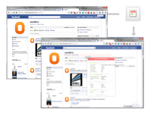

CSS Viewer Extension
CSSViewer is a simple CSS property viewer for Google chrome originally made by Nicolas Huon as a FireFox addon.
How to use :CSSViewer shows the css parameters of any element in a web page, to enable/disable it simply click the toolbar icon and then hover any element on you want to inspect in the page.How to uninstall :- Click the wrench icon on the browser toolbar.- Click Tools. - Select Extensions. - Find the CSSViewer extension then click Uninstall. CSSViewer ported to Google chrome on March 2010. All credit goes to the original developer.
Changelog:
1.5: 10/2015 - Hotfix an issue with Chrome/38.0.2125.101.
1.4: 02/2013 - A bunch of minor changes in order to release CSSViewer as an open source project at Github. 1.3: 08/2011 - Support some CSS3 properties under the "Effects' category. 1.2: 07/2011 - Fix some minor bugs. 1.1: 03/2010 - Initial version. |